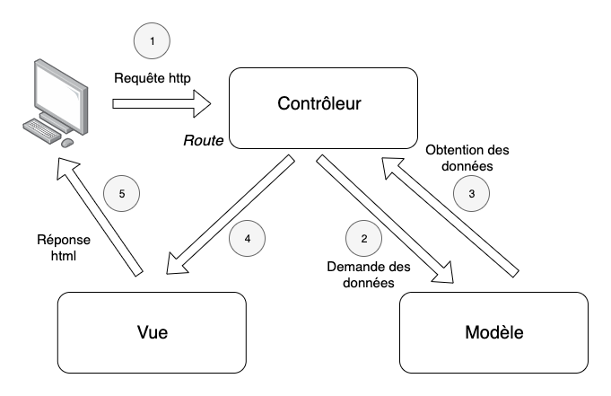

Un patron de conception (souvent appelé design pattern) est un arrangement caractéristique de modules, reconnu comme bonne pratique en réponse à un problème de conception d'un logiciel. Il décrit une solution standard, utilisable dans la conception de différents logiciels
- Wikipedia
En d'autres termes : ce sont des manières classiques et courantes de résoudre des problèmes communs en programmation
Sont ajoutés à cette listes des notions qui ne sont pas des design patterns, mais qui s'intègrent bien à cette partie du cours.
Il en existe plein d'autres, que nous ne verrons pas dans ce cours.
Voir https://en.wikipedia.org/wiki/Software_design_pattern
Une classe abstraite est une classe qui ne peut pas être instanciée.
Elle ne sera utilisé que comme parent d'une autre classe.
Cela permet de définir des ensemble de méthodes communes à plusieurs classes.
|
|
A utiliser quand
A ne pas utiliser quand
Parfois, il est utile de placer des valeurs ou des fonctions dans des objets, mais qui ne sont pas liés à une instance. Math :
const area = Math.PI * 3 * 3;
const cosinus = Math.cos(12);
const absolute = Math.abs(-45);
const euler_number = Math.E;
Math est une classe qui n'est jamais instanciée. A aucun moment on ne fait const value = new Math();
Tous les éléments de Math sont dit statiques. Les éléments statiques sont simplement "rangés" dans une classe.
Les éléments statiques sont indiqués par le mot clé static.
class MyMath {
static PI = 3.141592653589793;
static E = 2.718281828459045;
static add(a, b) {
return a + b;
}
static square(x) {
return x * x;
}
}
console.log(MyMath.PI); // 3.1415....
console.log(MyMath.add(3,5)); // 8
On peut également empêcher l'instanciation de la même manière que pour une classe abstraite.
Il est possible de combiner éléments statiques et non statiques dans une même classe.
A utiliser quand
A ne pas utiliser quand
Un Singleton est un objet ne pouvant être instancié qu'une fois.
Il est global à toute l'exécution du programme.
Créer un deuxième objet peut soit retourner une erreur, soit retourner le même objet global.
|
|
Il existe plusieurs solutions d'implémentation. On pourrait aussi utiliser une fonction statique ConfigManager.getInstance() pour obtenir l'objet.
A utiliser quand
A ne pas utiliser quand
Attention : Le singleton est un pattern souvent critiqué, dont il est facile d'abuser.
On a tendance à l'utiliser pour se simplifier la vie, alors qu'il crée de grands effets de bord !
Certains objets peuvent devenir complexes à construire, avec des constructeurs possédant beaucoup de paramètres.
Dans d'autres cas, il est difficile de construire un objet en une fois, à un seul endroit dans le code.
Le pattern Builder vise à construire un objet final en plusieurs étapes.
// Classe décrivant une requête SQL
class Query {
constructor(select, from, where, order) {
this.select = select;
this.from = from;
this.where = where;
this.order = order;
}
toString() {
return `SELECT ${this.select} FROM ${this.from} WHERE ${this.where} ORDER BY ${this.order}`;
}
}
class QueryBuilder {
setSelect(fields) {
this.select = fields;
return this;
}
setFrom(table) {
this.from = table;
return this;
}
setWhere(cond) {
this.where = cond;
return this;
}
setOrderBy(field) {
this.orderBy = field;
return this;
}
build() {
return new Query(this.select, this.from, this.where, this.orderBy);
}
}
const query = new QueryBuilder()
.setSelect("*")
.setFrom("users")
.setWhere("age > 18")
.setOrderBy("name")
.build();
console.log(query.toString());
const qBuilder = new QueryBuilder()
/* ... */
qBuilder = qBuilder.setSelect("*")
/* ... */
qBuilder = qBuilder.setFrom("users")
/* ... */
qBuilder = qBuilder.setWhere("age > 18")
/* ... */
qBuilder = qBuilder.setOrderBy("name")
/* ... */
const query = qBuilder.build();
console.log(query.toString());
A utiliser quand
A ne pas utiliser quand
Un adapter permet de transformer l'interface d'une classe pour qu'elle "s'adapte" à un besoin donné
class KMLReader {
constructor(filePath) {
this.filePath = filePath;
}
readKML() { /* Lit le contenu du fichier */ }
}
class GeoJSONAdapter {
constructor(kmlReader) {
this.kmlReader = kmlReader;
}
readJson() { /* Utilise this.kmlReader pour produire du GeoJSON */ }
}
Un adapter permet de transformer l'interface d'une classe pour qu'elle "s'adapte" à un besoin donné
const kmlReader = new KMLReader("map.kml");
const geojsonAdapter = new GeoJSONAdapter(kmlReader);
const geojson = geojsonAdapter.readJson();
A utiliser quand
A ne pas utiliser quand
Un Decorator prend le résultat d'une classe et vient y ajouter quelque chose de nouveau
class Text {
constructor(content) { this.content = content; }
render() { return this.content; }
}
class Bold {
constructor(text) { this.text = text; }
render() { return `<b>${this.text.render()}</b>`; }
}
class Italic {
constructor(text) { this.text = text; }
render() { return `<i>${this.text.render()}</i>`; }
}
class Underline {
constructor(text) { this.text = text; }
render() { return `<u>${this.text.render()}</u>`; }
}
const text = new Text("Hello world");
const formatted = new Underline( new Bold( new Italic(text) ) );
console.log(formatted.render());
A utiliser quand
A ne pas utiliser quand
Tiré de Wikipédia :
Modèle-vue-contrôleur ou MVC est un motif d'architecture logicielle destiné aux interfaces graphiques, lancé en 1978 et très populaire pour les applications web. Le motif est composé de trois types de modules ayant trois responsabilités différentes : les modèles, les vues et les contrôleurs.

Quand faut-il utiliser des patrons de conception ?
Comment les utiliser efficacement ?
Quand faut-il utiliser des patrons de conception ?
Comment les utiliser efficacement ?
La réponse est simple : K.I.S.S.
Autrement dit : seulement si cela rend le code plus clair et facile à comprendre.
Une erreur classique est la sur-utilisation de patterns : ce n'est pas parce qu'ils existent qu'il faut les utiliser. Ce ne sont que des outils pour atteindre un code de qualité, par des garanties !
Voir par exemple le repo satirique https://github.com/EnterpriseQualityCoding/FizzBuzzEnterpriseEdition
Ce programme effectue un calcul très simple, mais noyé dans un code chaotique.